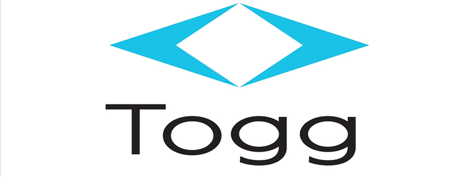

Türkiye’ye ait küresel ölçekte rekabet edecek bir teknoloji markası yaratma hedefiyle 25 Haziran 2018'de yola çıktık.
Dünyayı ileriye taşıyacak hareket teknolojilerimizle yeni nesil akıllı cihazlar tasarlıyoruz. Bu cihazların etrafında ise “Use Case Mobility” kavramına uygun, hayatın her alanının birbiriyle bağlantıda olduğu mobilite ekosistemi geliştiriyoruz.
Böylece insan odaklı, hayatı kolaylaştıran yepyeni bir yaşam alanı tasarlayarak geleceğimizi değiştirmeyi hedefliyoruz.
